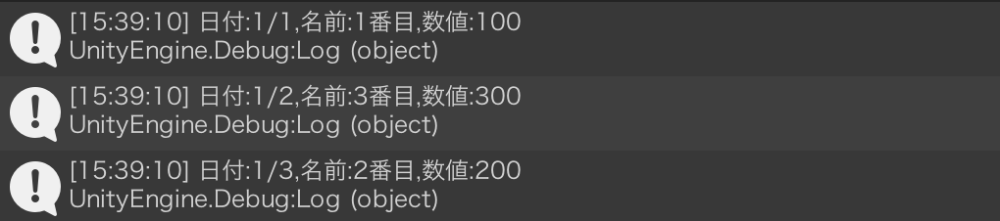
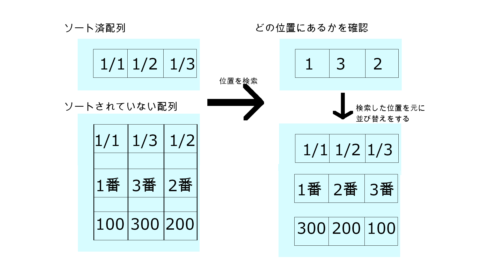

更新履歴
- 2025/1/23:作成
基準を決めて並び替える
C#には昇順、降順を手軽に行える関数がデフォルトで存在しています。このSort関数はdatetime型などにも使えるためお世話になる人も多いと思います。というかお世話になりました。
しかしソートをする時こういった場面が出てくる時があります。
このデータを
| 日付 | 名前 | 数値 |
| 1/2 | 2番目 | 200 |
| 1/3 | 3番目 | 100 |
| 1/1 | 1番目 | 300 |
↓こう並び替えたい
| 日付 | 名前 | 数値 |
| 1/1 | 1番目 | 300 |
| 1/2 | 2番目 | 200 |
| 1/3 | 3番目 | 100 |
| 日付 | 名前 | 数値 |
| 1/1 | 1番目 | 100 |
| 1/2 | 2番目 | 200 |
| 1/3 | 3番目 | 300 |
実際どうするの
プログラムはUnityで作って表示していますがC#ならどこでも動くと思います。
今回は日付が格納された配列を昇順にソートします。
using System;//これがないとDateTime型が使えない
public class ArraySort : MonoBehaviour
{
// 1/2,1/3,1/1が格納された配列を作成
DateTime[] Datearray = { new DateTime(2025, 1, 2), new DateTime(2025, 1, 3), new DateTime(2025, 1, 1) };
// 1番目,3番目,2番目が格納された配列を作成
string[] stringarray = { "1番目", "3番目", "2番目" };
// 100,300,200が格納された配列を作成
int[] intarray = { 100, 300, 200 };
void Start()
{
Arraysort();//ソートする関数を呼び出し
}
void Arraysort()
{
DateTime[] tempDatearray = Datearray;//ソートする配列を一時格納
//他の配列は要素数だけを呼び出す
DateTime[] sortedDatearray = new DateTime[Datearray.Length];
string[] sortedStringarray = new string[stringarray.Length];
int[] sortedIntarray = new int[intarray.Length];
//配列をソート
Array.Sort(tempDatearray);
//配列の長さ分繰り返す
for (int n = 0; n < tempDatearray.Length; n++)
{
for (int m = 0; m < Datearray.Length; m++)
{
//格納された場所を探して見つけたら見つけた箇所をソート済配列に格納する
if (Datearray[m] == tempDatearray[n])
{
//データの順番を入れ替える
sortedDatearray[n] = Datearray[m];
sortedStringarray[n] = stringarray[m];
sortedIntarray[n] = intarray[m];
//重複対策
Datearray[m] = new DateTime(1, 1, 1);
continue;//次のループへ
}
}
}
//コンソールに表示するためのプログラム
for (int n = 0; n < sortedDatearray.Length; n++)
{
Debug.Log("日付:" + sortedDatearray[n].Month + "/" + sortedDatearray[n].Day + ",名前:" + sortedStringarray[n] + ",数値:" + sortedIntarray[n]);
}
}
}
実行結果
うまくソートできてますね
補足と解説
このソートプログラム注意点が二個ありまして
まとめてソートするときは要素数が同じじゃないとエラーが出やすいです。
また、重複したデータのソートが正確にできません。
毎回同じ結果が発生するとは限らないので重複がないデータにするか順番が毎回変わることを許容していただければ...
//配列の長さ分繰り返す
for (int n = 0; n < tempDatearray.Length; n++)
{
for (int m = 0; m < Datearray.Length; m++)
{
//格納された場所を探して見つけたら見つけた箇所をソート済配列に格納する
if (Datearray[m] == tempDatearray[n])
{
//データの順番を入れ替える
sortedDatearray[n] = Datearray[m];
sortedStringarray[n] = stringarray[m];
sortedIntarray[n] = intarray[m];
//重複対策
Datearray[m] = new DateTime(1, 1, 1);
bleak;//ループを中断して次へ
}
}
}
この部分を主に解説していきます。といってもやっていることは単純で
ざっくり解説するとこうなります。
基準となる配列を数値などに変えても問題なく機能しました。
結論
今回は一つの配列を基準にして複数の配列をソートするプログラムを解説しました。
重複したデータのソートが安定しないという欠点はありますがうまく使って頂けると幸いです。
ではご高覧ありがとうございました〜